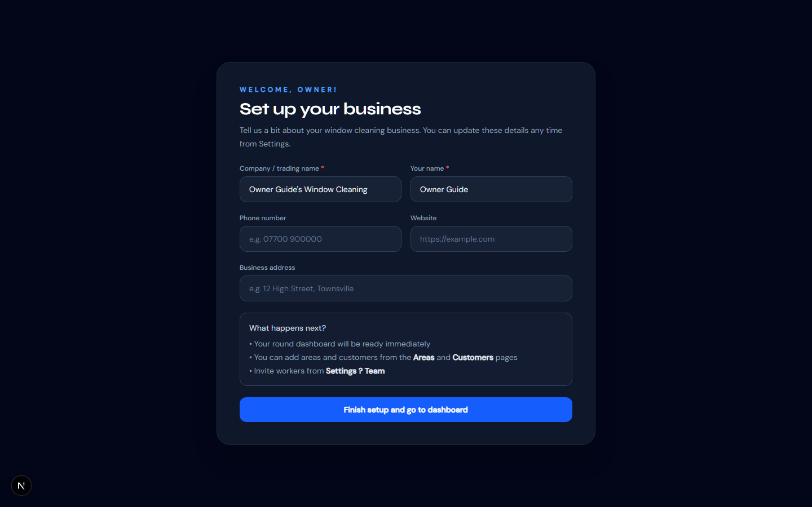
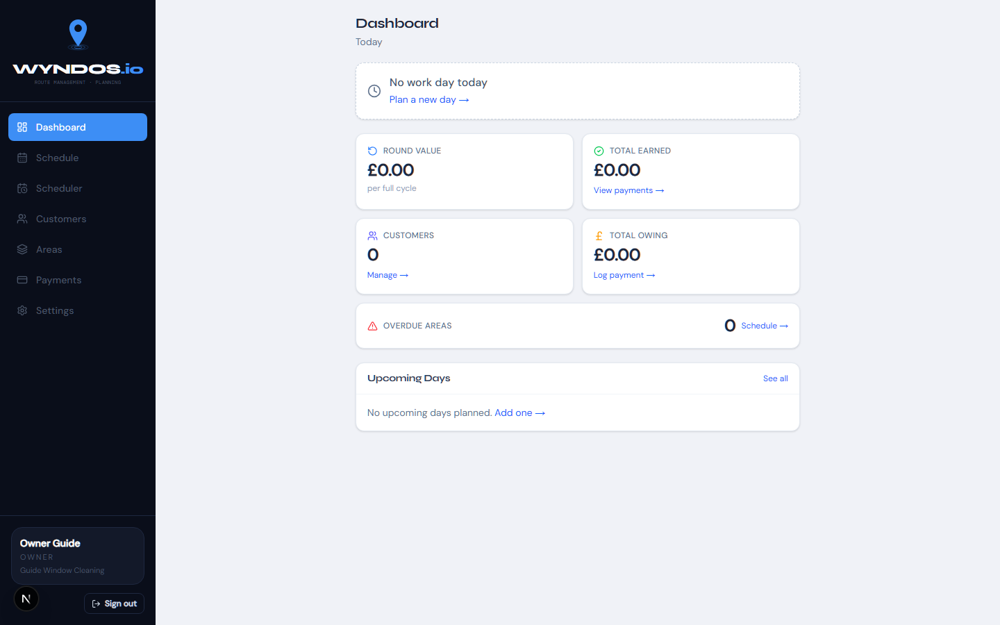
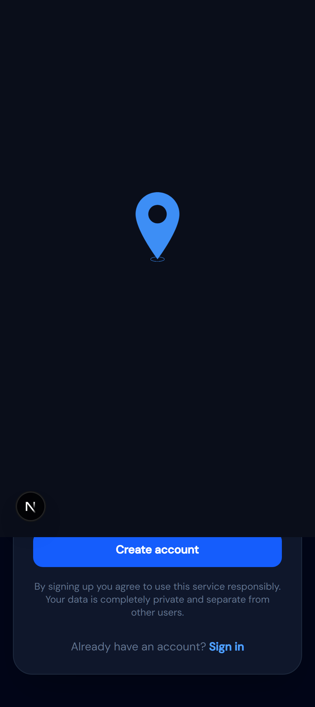
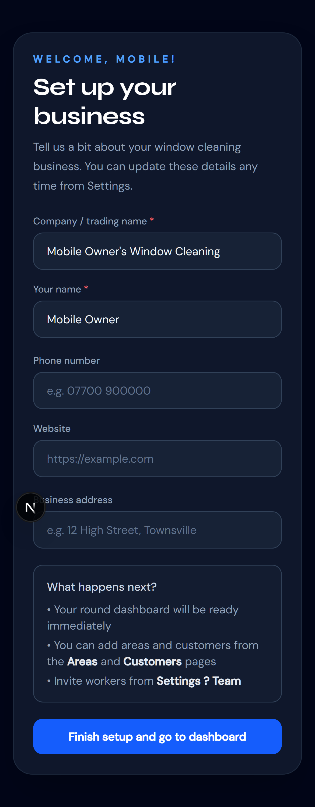
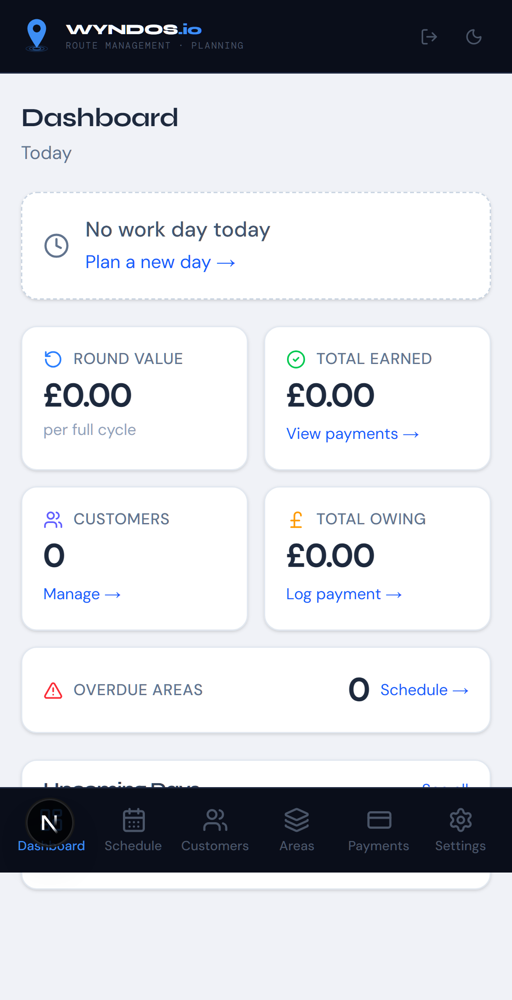

<!-- Reusable onboarding guide snippet derived from owner-signup-and-onboarding.md -->
<style>
  .guide-card {
    max-width: 960px;
    margin: 0 auto;
    padding: 32px;
    border: 1px solid #d7deea;
    border-radius: 24px;
    background: #ffffff;
    color: #16233b;
    font: 16px/1.6 "DM Sans", Arial, sans-serif;
    box-shadow: 0 20px 60px rgba(18, 35, 59, 0.08);
  }

  .guide-card h1,
  .guide-card h2,
  .guide-card h3 {
    margin: 0 0 12px;
    font-family: "Syne", Arial, sans-serif;
    line-height: 1.2;
    color: #13213a;
  }

  .guide-card h1 {
    font-size: 2rem;
  }

  .guide-card h2 {
    margin-top: 28px;
    font-size: 1.35rem;
  }

  .guide-card h3 {
    margin-top: 24px;
    font-size: 1.05rem;
  }

  .guide-card p,
  .guide-card li {
    color: #42516c;
  }

  .guide-card code {
    padding: 0.1rem 0.35rem;
    border-radius: 6px;
    background: #eef4ff;
    color: #1d4ed8;
    font-family: "DM Mono", Consolas, monospace;
    font-size: 0.92em;
  }

  .guide-meta {
    display: grid;
    grid-template-columns: repeat(auto-fit, minmax(220px, 1fr));
    gap: 14px;
    margin: 20px 0 28px;
  }

  .guide-meta div,
  .guide-note,
  .guide-expected,
  .guide-shots {
    padding: 14px 16px;
    border-radius: 16px;
    background: #f7faff;
    border: 1px solid #dbe7ff;
  }

  .guide-step {
    margin-top: 22px;
    padding-top: 18px;
    border-top: 1px solid #e7edf6;
  }

  .guide-step:first-of-type {
    border-top: 0;
    padding-top: 0;
  }

  .guide-shots ul,
  .guide-note ul {
    margin: 8px 0 0;
    padding-left: 20px;
  }

  .guide-step ol,
  .guide-list {
    padding-left: 22px;
  }

  .guide-screenshot-grid {
    display: grid;
    grid-template-columns: repeat(auto-fit, minmax(260px, 1fr));
    gap: 16px;
    margin-top: 12px;
  }

  .guide-screenshot-grid figure {
    margin: 0;
    padding: 12px;
    border: 1px solid #e4eaf5;
    border-radius: 18px;
    background: #fbfdff;
  }

  .guide-screenshot-grid img {
    display: block;
    width: 100%;
    height: auto;
    border-radius: 12px;
    border: 1px solid #dbe2ef;
  }

  .guide-screenshot-grid figcaption {
    margin-top: 10px;
    font-size: 0.92rem;
    color: #5b6a86;
  }
</style>

<!-- Main article wrapper: keeps the snippet portable and easy to embed in a docs page -->
<article class="guide-card" aria-labelledby="owner-onboarding-title">
  <header>
    <p><strong>Guide</strong> for new owners or admins</p>
    <h1 id="owner-onboarding-title">Owner Signup And Onboarding</h1>
    <p>
      Use this walkthrough to create a new owner account, complete the initial business setup,
      and confirm that the account lands on the main dashboard.
    </p>
  </header>

  <!-- Summary metadata: quick facts at the top for readers who need scope and coverage -->
  <section aria-labelledby="guide-summary-title">
    <h2 id="guide-summary-title">Guide Summary</h2>
    <div class="guide-meta">
      <div><strong>Audience:</strong><br>New owner or admin setting up a fresh Wyndos.io account</div>
      <div><strong>Environment tested:</strong><br><code>http://localhost:3000</code></div>
      <div><strong>Coverage:</strong><br>Signup, onboarding, and first dashboard redirect</div>
      <div><strong>Devices:</strong><br>Desktop and iPhone 13-sized mobile viewport</div>
    </div>
  </section>

  <!-- Prerequisites: kept near the top so users can verify they are ready before starting -->
  <section aria-labelledby="prerequisites-title">
    <h2 id="prerequisites-title">Prerequisites</h2>
    <ol class="guide-list">
      <li>The app is running locally at <code>http://localhost:3000</code>.</li>
      <li>You have an email address that has not already been used in the system.</li>
      <li>You have a password with at least 8 characters.</li>
    </ol>
  </section>

  <!-- Each step uses the same structure: actions, screenshots, then expected result -->
  <section aria-labelledby="steps-title">
    <h2 id="steps-title">Step-By-Step Walkthrough</h2>

    <section class="guide-step" aria-labelledby="step-1-title">
      <h3 id="step-1-title">Step 1. Open the signup page</h3>
      <ol>
        <li>Go to <code>http://localhost:3000/auth/signup</code>.</li>
        <li>Confirm the page heading says <code>Create your account</code>.</li>
        <li>Review the intro text <code>Get started — it's free</code> and <code>Enter your details below to set up your window cleaning round.</code></li>
      </ol>
      <div class="guide-shots">
        <strong>Screenshot references</strong>
        <ul>
          <li>Desktop: <code>screenshots/desktop-01-signup-page.png</code></li>
          <li>Mobile: <code>screenshots/mobile-01-signup-page.png</code></li>
        </ul>
      </div>
      <p class="guide-expected"><strong>Expected result:</strong> The signup form is visible with fields for your name, company, email, password, and password confirmation.</p>
    </section>

    <section class="guide-step" aria-labelledby="step-2-title">
      <h3 id="step-2-title">Step 2. Complete the signup form</h3>
      <ol>
        <li>Enter a value in <code>Your full name</code>.</li>
        <li>Enter your business name in <code>Company / trading name</code>.</li>
        <li>Enter your email in <code>Email address</code>.</li>
        <li>Enter your password in <code>Password</code>.</li>
        <li>Enter the same password again in <code>Confirm password</code>.</li>
        <li>Select <code>Create account</code>.</li>
      </ol>
      <div class="guide-shots">
        <strong>Screenshot references</strong>
        <ul>
          <li>Desktop: <code>screenshots/desktop-02-signup-form-complete.png</code></li>
          <li>Mobile: <code>screenshots/mobile-02-signup-form-complete.png</code></li>
        </ul>
      </div>
      <p class="guide-expected"><strong>Expected result:</strong> The app creates the account and redirects you to the onboarding screen at <code>/auth/onboarding</code>.</p>
    </section>

    <section class="guide-step" aria-labelledby="step-3-title">
      <h3 id="step-3-title">Step 3. Review the onboarding page</h3>
      <ol>
        <li>Confirm the page heading says <code>Set up your business</code>.</li>
        <li>Read the helper text <code>Tell us a bit about your window cleaning business. You can update these details any time from Settings.</code></li>
        <li>Review the <code>What happens next?</code> panel.</li>
      </ol>
      <div class="guide-note">
        <strong>What the panel currently says</strong>
        <ul>
          <li><code>Your round dashboard will be ready immediately</code></li>
          <li><code>You can add areas and customers from the Areas and Customers pages</code></li>
          <li><code>Invite workers from Settings ? Team</code></li>
        </ul>
      </div>
      <div class="guide-shots">
        <strong>Screenshot references</strong>
        <ul>
          <li>Desktop: <code>screenshots/desktop-03-onboarding-page.png</code></li>
          <li>Mobile: <code>screenshots/mobile-03-onboarding-page.png</code></li>
        </ul>
      </div>
      <p class="guide-expected"><strong>Expected result:</strong> The onboarding form opens with required business details and a clear explanation of what becomes available next.</p>
    </section>

    <section class="guide-step" aria-labelledby="step-4-title">
      <h3 id="step-4-title">Step 4. Fill in your business details</h3>
      <ol>
        <li>Review and complete <code>Company / trading name</code>.</li>
        <li>Review and complete <code>Your name</code>.</li>
        <li>Enter a contact number in <code>Phone number</code> if you want it stored straight away.</li>
        <li>Enter your site URL in <code>Website</code> if you have one.</li>
        <li>Enter your business location in <code>Business address</code>.</li>
        <li>Select <code>Finish setup and go to dashboard</code>.</li>
      </ol>
      <div class="guide-shots">
        <strong>Screenshot references</strong>
        <ul>
          <li>Desktop: <code>screenshots/desktop-04-onboarding-form-complete.png</code></li>
          <li>Mobile: <code>screenshots/mobile-04-onboarding-form-complete.png</code></li>
        </ul>
      </div>
      <p class="guide-expected"><strong>Expected result:</strong> The app saves the onboarding form and redirects you to the main dashboard.</p>
    </section>

    <section class="guide-step" aria-labelledby="step-5-title">
      <h3 id="step-5-title">Step 5. Confirm the dashboard opens</h3>
      <ol>
        <li>Wait for the redirect to complete.</li>
        <li>Confirm the main page heading says <code>Dashboard</code>.</li>
        <li>On a new account, expect to see an empty-state dashboard with <code>No work day today</code>, <code>ROUND VALUE £0.00</code>, <code>TOTAL EARNED £0.00</code>, <code>CUSTOMERS 0</code>, <code>TOTAL OWING £0.00</code>, and <code>OVERDUE AREAS 0</code>.</li>
        <li>On desktop, confirm the left navigation includes <code>Dashboard</code>, <code>Schedule</code>, <code>Scheduler</code>, <code>Customers</code>, <code>Areas</code>, <code>Payments</code>, and <code>Settings</code>.</li>
        <li>On mobile, confirm the bottom navigation includes <code>Dashboard</code>, <code>Schedule</code>, <code>Customers</code>, <code>Areas</code>, <code>Payments</code>, and <code>Settings</code>.</li>
      </ol>
      <div class="guide-shots">
        <strong>Screenshot references</strong>
        <ul>
          <li>Desktop: <code>screenshots/desktop-05-dashboard-after-onboarding.png</code></li>
          <li>Mobile: <code>screenshots/mobile-05-dashboard-after-onboarding.png</code></li>
        </ul>
      </div>
      <p class="guide-expected"><strong>Expected result:</strong> You land on a clean dashboard ready for setup work such as adding customers, areas, and planned days.</p>
    </section>
  </section>

  <!-- Optional visual gallery: useful if the snippet is dropped into a static docs page -->
  <section aria-labelledby="gallery-title">
    <h2 id="gallery-title">Annotated Screenshot Gallery</h2>
    <div class="guide-screenshot-grid">
      <figure>
        
        <figcaption>Desktop entry point for the signup flow.</figcaption>
      </figure>
      <figure>
        
        <figcaption>Desktop onboarding screen after the account is created.</figcaption>
      </figure>
      <figure>
        
        <figcaption>Desktop dashboard state immediately after setup.</figcaption>
      </figure>
      <figure>
        
        <figcaption>Mobile signup layout uses the same fields and action button.</figcaption>
      </figure>
      <figure>
        
        <figcaption>Mobile onboarding form stacks the fields vertically for easier scrolling.</figcaption>
      </figure>
      <figure>
        
        <figcaption>Mobile dashboard includes the fixed bottom navigation after setup.</figcaption>
      </figure>
    </div>
  </section>

  <!-- Notes and caveats: preserves the observed issues without changing the verified guide content -->
  <section aria-labelledby="notes-title">
    <h2 id="notes-title">Notes And Caveats</h2>
    <div class="guide-note">
      <ul>
        <li>No broken steps blocked completion of signup or onboarding during this pass.</li>
        <li>After selecting <code>Finish setup and go to dashboard</code>, the app shows a short splash/loading screen before the dashboard settles.</li>
        <li>The onboarding helper text currently shows <code>Settings ? Team</code> with a <code>?</code> character, and this snippet preserves that text exactly as observed.</li>
        <li>This snippet covers owner signup and onboarding only, not later setup workflows such as areas, customers, scheduling, or worker invitations.</li>
      </ul>
    </div>
  </section>
</article>